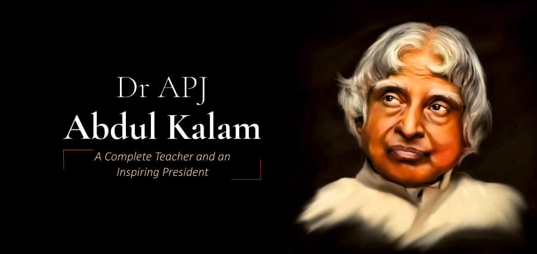

ms dhoni
|
MS DHONI
|
DR.APJ ABDUL KALAM
APJ ABDUL KALAMAvul Pakir Jainulabdeen Abdul Kalam BR was an Indian aerospace scientist and statesman who served as the 11th president of India from 2002 to 2007. Born and raised in a Muslim family in Rameswaram, Tamil Nadu, he studied physics and aerospace engineering. He spent the next four decades as a scientist and science administrator, mainly at the Defence Research and Development Organisation (DRDO) and Indian Space Research Organisation (ISRO) and was intimately involved in India's civilian space programme and military missile development efforts.[1] He thus came to be known as the Missile Man of India for his work on the development of ballistic missile and launch vehicle technology.[2][3][4] He also played a pivotal organisational, technical, and political role in India's Pokhran-II nuclear tests in 1998, the first since the original nuclear test by India in 1974.[5] |
 |
Narendra Damodardas Modi

|
Narendra ModiNarendra Damodardas Modi (Gujarati: [ˈnəɾendɾə dɑmodəɾˈdɑs ˈmodiː] ⓘ; born 17 September 1950)[b] is an Indian politician who has served as the 14th prime minister of India since May 2014. Modi was the chief minister of Gujarat from 2001 to 2014 and is the Member of Parliament (MP) for Varanasi. He is a member of the Bharatiya Janata Party (BJP) and of the Rashtriya Swayamsevak Sangh (RSS), a right wing Hindu nationalist paramilitary volunteer organisation. He is the longest-serving prime minister from outside the Indian National Congress.
|